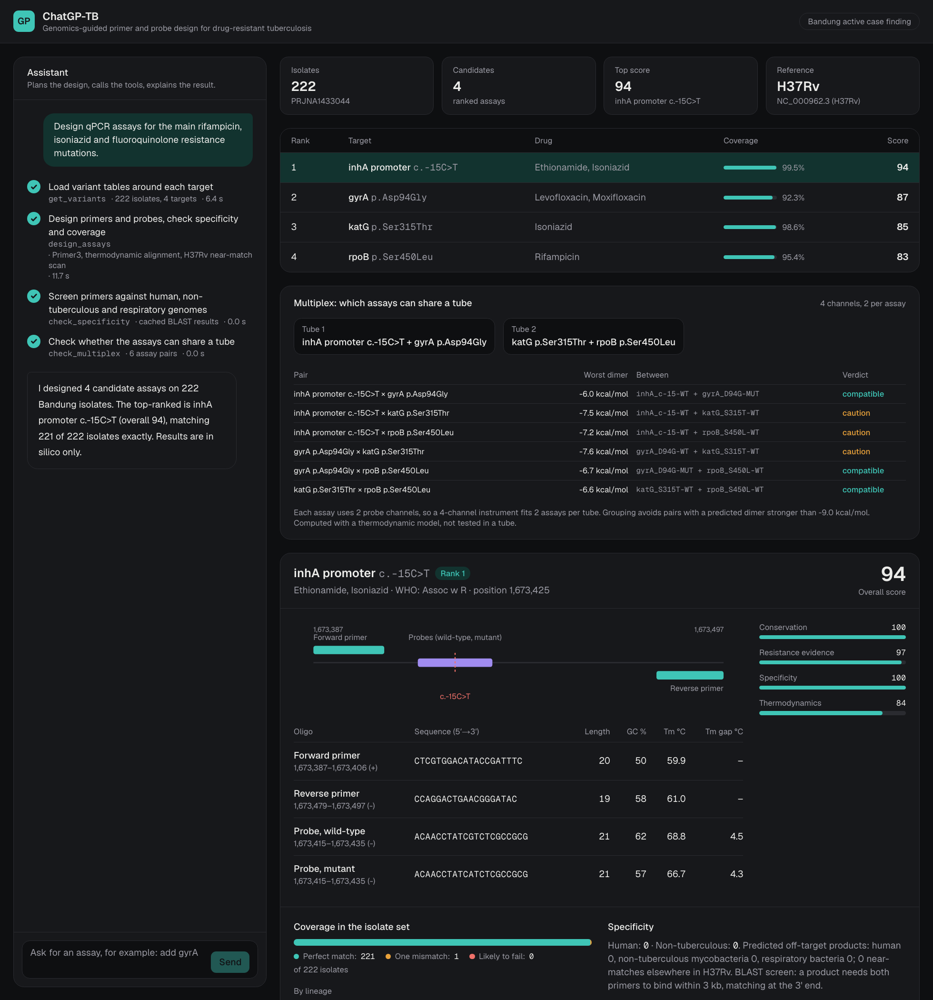

GenoHack 2026 · genomics-guided primer and probe design for drug-resistant TB · status on 24 October 2026 · all results are in silico
ChatGP-TB turns 222 public M. tuberculosis genomes from Bandung (BioProject PRJNA1433044) into qPCR primers and allele-specific probes for four resistance hotspots. Each design is checked against every isolate, screened for off-target amplification in human, non-tuberculous mycobacterial and respiratory-bacterial genomes, scored, and tested for whether assays can share a tube. A Gemini agent (Vertex AI) turns a chat request into a call to this design tool; a web interface shows the ranked result. The data run finished: all 222 isolates processed in about 9.5 hours on one cloud VM. Nothing has been tested in a tube.
| Area | State | Note |
|---|---|---|
| Genome processing, 222 isolates | Done | download, subsample to 100x, snippy variant calls, TB-Profiler lineage and drug calls, results in Cloud Storage |
| Design library and checks | Done | variant table, conserved windows on the population consensus, Primer3 primers, wild-type and mutant probes, dimers, BLAST specificity, coverage by lineage, multiplex tube grouping; 11 tests pass |
| Agent, API and interface | Done | tested end to end on the final data; runs on a laptop, not hosted |
| Resistance-SNP ranking | Partial | 4 hand-picked hotspots with real WHO evidence, not an automated ranking of all mutations |
| Held-out validation (other 779 Indonesian runs) | Not started | coverage below is measured on the same isolates the oligos were designed from |
| Hosted deployment, wet-lab validation | Not started | deployment needs containers and a data copy; wet lab is outside the hackathon |
| 3-page proposal | Not started | a draft exists in the master document (pp. 68-71) and needs updating with these results |
| # | Assay | Drug(s) | Score | Exact match | Likely fail | Off-target products (human / NTM) | Probe Tm gap, C |
|---|---|---|---|---|---|---|---|
| 1 | inhA promoter c.-15C>T | Ethionamide, Isoniazid | 94 | 221/222 (99.5%) | 0 | 0 / 0 | 4.3 |
| 2 | gyrA p.Asp94Gly | Levofloxacin, Moxifloxacin | 87 | 205/222 (92.3%) | 3 | 0 / 0 | 4.6 |
| 3 | katG p.Ser315Thr | Isoniazid | 85 | 219/222 (98.6%) | 1 | 0 / 0 | 3.4 |
| 4 | rpoB p.Ser450Leu | Rifampicin | 83 | 212/222 (95.4%) | 2 | 0 / 0 | 4.6 |
Score = 0.30 conservation + 0.30 thermodynamics + 0.20 specificity + 0.20 WHO evidence (weights are my choice, not fitted). Exact match = isolates matching every oligo with no mismatch. Probe Tm gap = the smaller of the two probes' estimated melting-temperature drop against the other allele (a thermodynamic model, not a measurement). Lineages: L1: 8, L2: 94, L2 + L4: 3, L4: 117. Tubes on a 4-channel instrument (2 channels per assay): inhA + gyrA; katG + rpoB; no pair reaches the conflict limit. gyrA needed a relaxed design (a polymorphism near the SNP in about 8% of isolates).
Runs on the cloud VM, 6 isolates at a time; median 14 minutes of wall time per isolate.
Runs on a laptop in about 20 seconds for all 222 isolates; the BLAST screen runs on the VM and its result is cached by primer pair.

Chat panel on the left, ranked assays and multiplex card on the right (top of the page shown; the per-assay detail is below it).
| Item | Detail |
|---|---|
| Project / region | haduh-512512; VM in us-east4-a (the first Singapore VM was deleted after repeated download stalls) |
| VM | genohack-analysis-us, e2-standard-16 (16 vCPU, 64 GB), 400 GB disk; shut itself down on completion. Disk still bills about $1.50/day until deleted |
| Storage | bucket in asia-southeast1: 329 MB of per-isolate results and an 842 MB BLAST index |
| Safety | 15-minute watchdog on the VM (restarts a dead or stalled run, stops the VM when done); two budget alerts (IDR 500,000) |
| Cost so far | my estimate from list prices, about $8-10 (VM about $7.5, the rest disk, storage and Gemini calls); check the billing console |
Full detail, commands and caveats: docs/HANDOVER.md in the repository (github.com/blueguy42/genohack).